Portabilità dei fondi pensione: la novità in discussione e i nodi con i CCNL
La manovra all'esame del Parlamento prevede di rafforzare la portabilità della previdenza complementare, consentendo al lavoratore di trasferire la posizione mantenendo il contribu…

Contratto a termine e stagionalità: la quinta proroga non si improvvisa
Non è possibile trasformare un contratto a termine ordinario in stagionale solo per ottenere una proroga in più. La stagionalità è una qualità oggettiva dell'attività, non un'etich…

Mediazione condominiale: chi boicotta l'assemblea può eccepire l'improcedibilità?
Un condomino diserta volontariamente l'assemblea convocata per autorizzare la mediazione, fa mancare il quorum e poi, in giudizio, eccepisce che la procedura non si è svolta. Una p…

La ritenuta del 4% sugli appalti in condominio: come funziona
Quando il condominio paga una ditta per lavori o servizi, l'amministratore agisce come sostituto d'imposta e deve trattenere il 4% sul corrispettivo, versandolo all'Erario. È una r…

Separazione e azienda: al coniuge non imprenditore spetta un credito, non i beni
In sede di separazione il coniuge non imprenditore non può pretendere l'assegnazione dei beni dell'azienda avviata dopo le nozze, ma solo un credito pari al 50% del suo valore nett…

Portabilità del contributo datoriale al fondo pensione: cosa cambia dal 31 ottobre 2026
La legge 199/2025 interviene sulla portabilità della posizione di previdenza complementare: decorsi i termini di permanenza, il lavoratore potrà trasferire l'intera posizione a un …

Trascrizione del pignoramento: funzione, durata e rinnovo ventennale
La trascrizione del pignoramento immobiliare rende l'atto opponibile ai terzi, ma i suoi effetti non durano per sempre: scadono dopo vent'anni, salvo rinnovo. Comprendere il meccan…

Rendiconto condominiale: l'accesso ai documenti non sana il bilancio irregolare
La possibilità per il condomino di consultare le pezze giustificative non rende valido un rendiconto strutturalmente confuso. Secondo l'orientamento del Tribunale di Roma, la chiar…

Infortuni nel pacchetto vacanze: la responsabilità del venditore
Chi vende un pacchetto turistico "tutto compreso" risponde anche degli infortuni subiti dal cliente nella struttura alberghiera. La Corte di Cassazione ribadisce che l'organizzator…

Offese nella chat aziendale: risarcimento del danno alla dignità anche senza mobbing
Secondo una recente pronuncia di merito, le offese rivolte a un dipendente nella chat aziendale possono fondare il risarcimento del danno alla dignità anche in assenza di mobbing. …
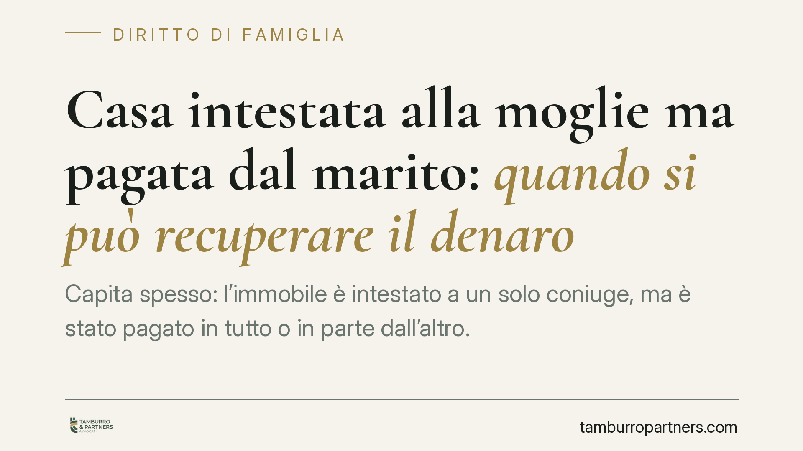
Casa intestata alla moglie ma pagata dal marito: quando si può recuperare il denaro
Capita spesso: l'immobile è intestato a un solo coniuge, ma è stato pagato in tutto o in parte dall'altro. Alla crisi del matrimonio, chi ha versato il denaro può chiederne la rest…
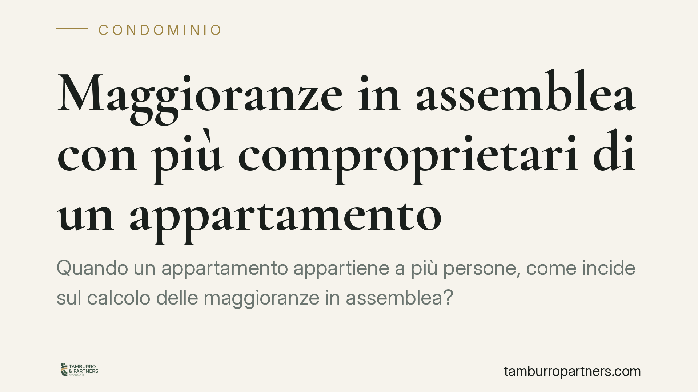
Maggioranze in assemblea con più comproprietari di un appartamento
Quando un appartamento appartiene a più persone, come incide sul calcolo delle maggioranze in assemblea? Il tema tocca quorum costitutivi e deliberativi, la figura del rappresentan…
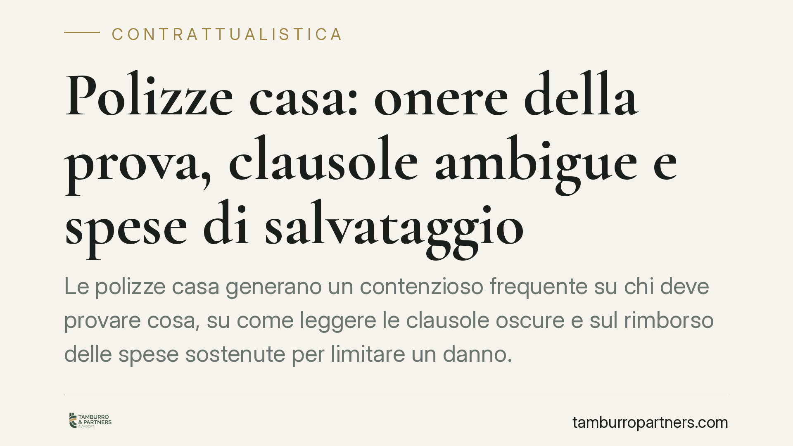
Polizze casa: onere della prova, clausole ambigue e spese di salvataggio
Le polizze casa generano un contenzioso frequente su chi deve provare cosa, su come leggere le clausole oscure e sul rimborso delle spese sostenute per limitare un danno. I princip…
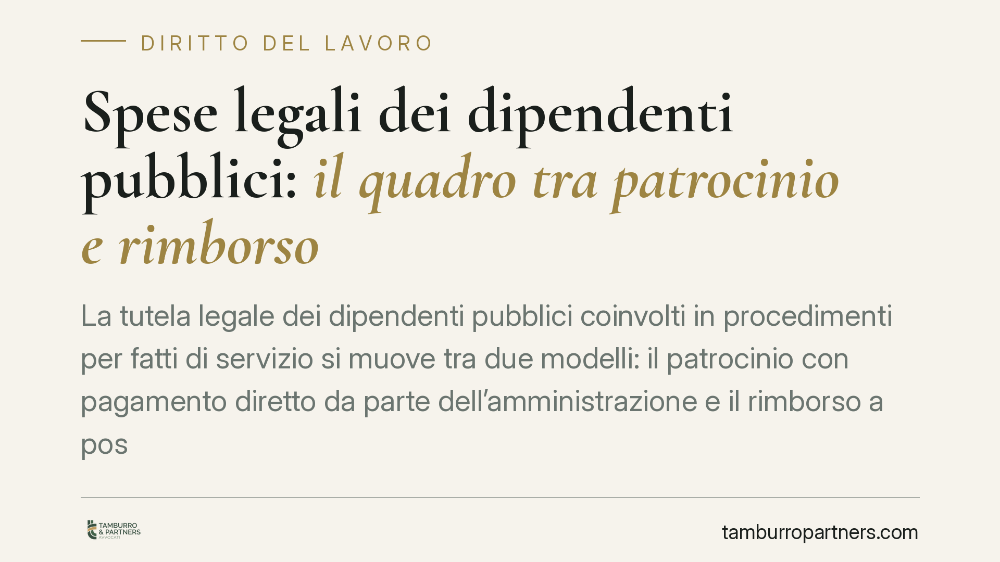
Spese legali dei dipendenti pubblici: il quadro tra patrocinio e rimborso
La tutela legale dei dipendenti pubblici coinvolti in procedimenti per fatti di servizio si muove tra due modelli: il patrocinio con pagamento diretto da parte dell'amministrazione…
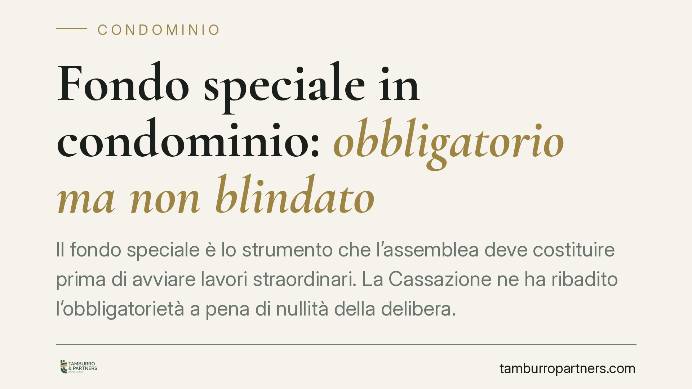
Fondo speciale in condominio: obbligatorio ma non blindato
Il fondo speciale è lo strumento che l'assemblea deve costituire prima di avviare lavori straordinari. La Cassazione ne ha ribadito l'obbligatorietà a pena di nullità della deliber…
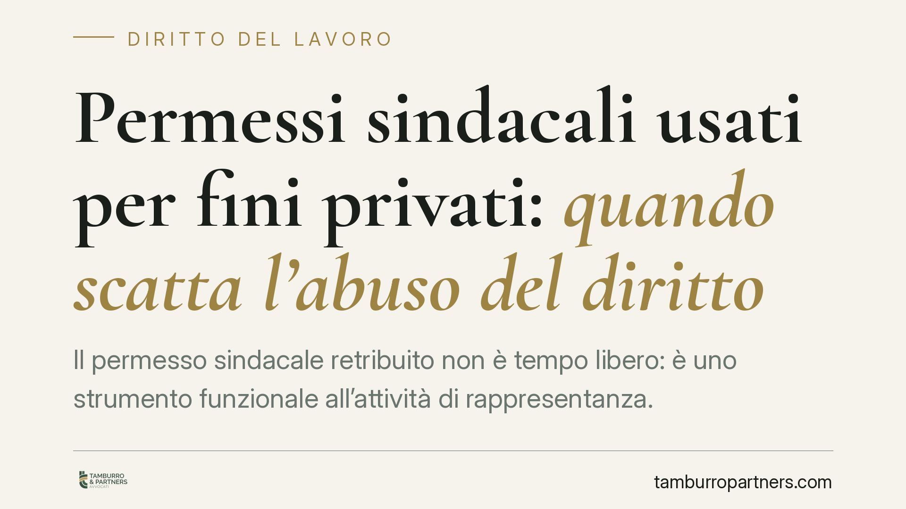
Permessi sindacali usati per fini privati: quando scatta l'abuso del diritto
Il permesso sindacale retribuito non è tempo libero: è uno strumento funzionale all'attività di rappresentanza. Una recente pronuncia di merito affronta il caso del dirigente sinda…
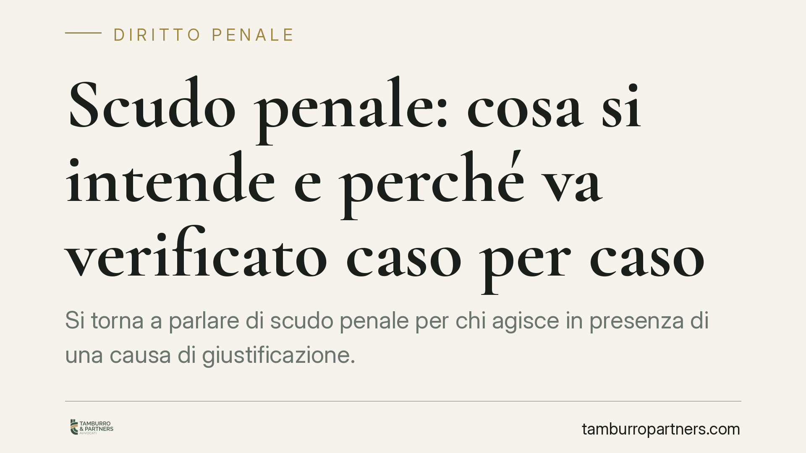
Scudo penale: cosa si intende e perché va verificato caso per caso
Si torna a parlare di "scudo penale" per chi agisce in presenza di una causa di giustificazione. L'espressione, però, non indica un istituto unitario del codice: è una formula gior…
Fringe benefit per il lavoro domenicale: quando l'esenzione fiscale regge
Riconoscere buoni benzina e spesa ai dipendenti impegnati nei turni domenicali è una leva sempre più diffusa, specie nei servizi essenziali. Ma l'esenzione da imposte e contributi …
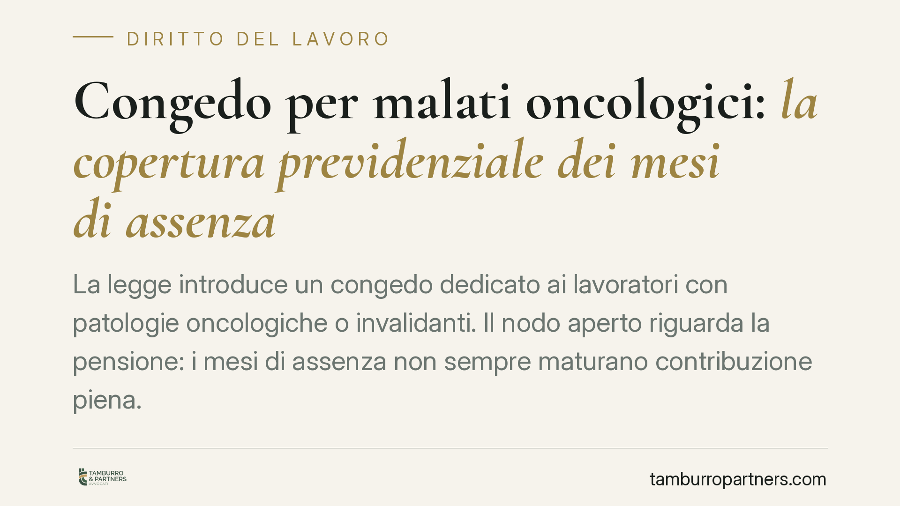
Congedo per malati oncologici: la copertura previdenziale dei mesi di assenza
La legge introduce un congedo dedicato ai lavoratori con patologie oncologiche o invalidanti. Il nodo aperto riguarda la pensione: i mesi di assenza non sempre maturano contribuzio…
Decreto sicurezza: nuove misure penali tra gruppi violenti online e minori
Sono annunciate come operative le misure del cosiddetto decreto sicurezza, con un inasprimento sanzionatorio per chi organizza gruppi violenti attraverso il web e con interventi ch…
Controlli dell'Ispettorato del lavoro: cosa verifica davvero
L'Ispettorato Nazionale del Lavoro concentra l'attività di vigilanza su cantieri, subappalti e sicurezza. Tra patente a crediti, formazione e sorveglianza sanitaria, le verifiche t…
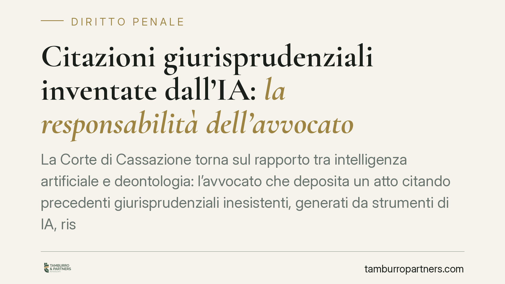
Citazioni giurisprudenziali inventate dall'IA: la responsabilità dell'avvocato
La Corte di Cassazione torna sul rapporto tra intelligenza artificiale e deontologia: l'avvocato che deposita un atto citando precedenti giurisprudenziali inesistenti, generati da …
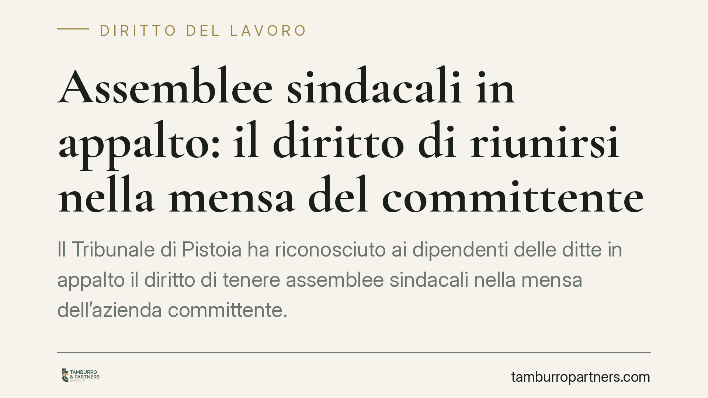
Assemblee sindacali in appalto: il diritto di riunirsi nella mensa del committente
Il Tribunale di Pistoia ha riconosciuto ai dipendenti delle ditte in appalto il diritto di tenere assemblee sindacali nella mensa dell'azienda committente. La decisione, fondata su…
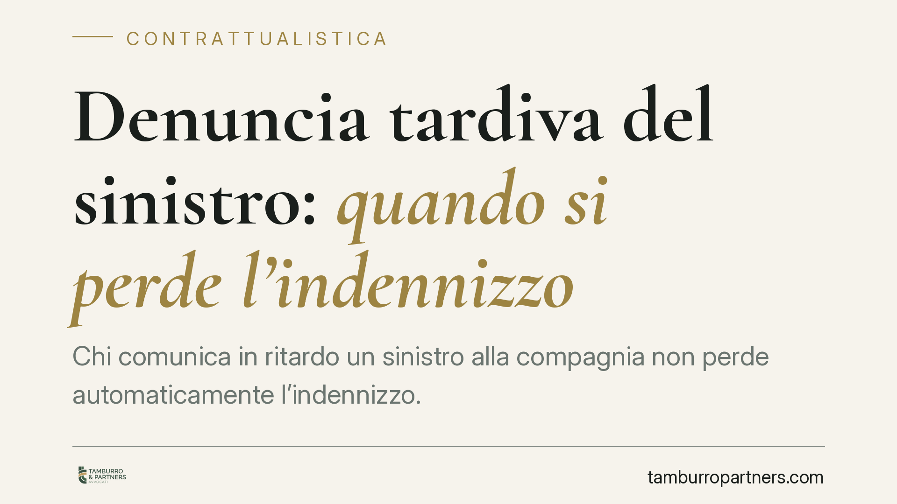
Denuncia tardiva del sinistro: quando si perde l'indennizzo
Chi comunica in ritardo un sinistro alla compagnia non perde automaticamente l'indennizzo. La Cassazione ribadisce un principio consolidato: la decadenza totale scatta solo per il …
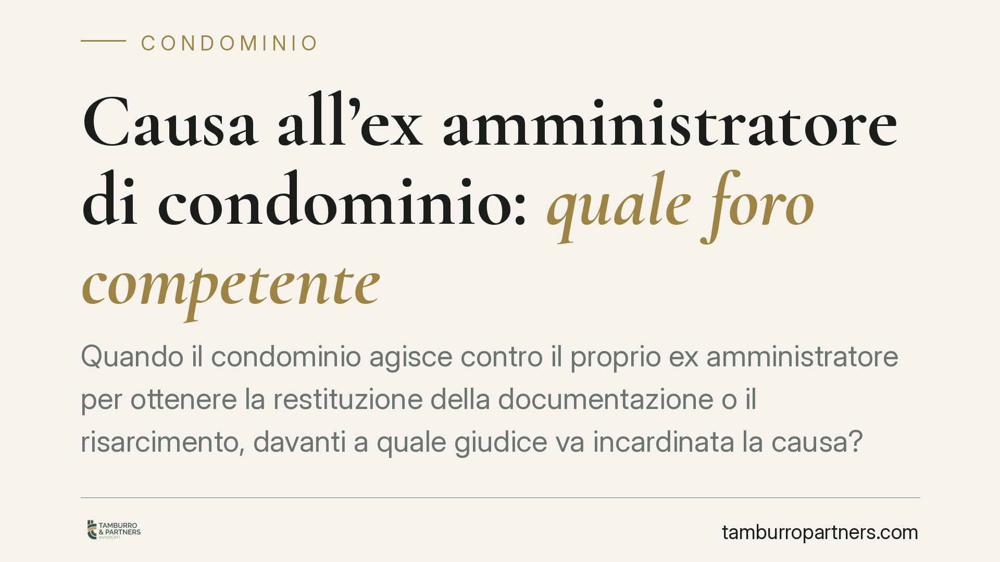
Causa all'ex amministratore di condominio: quale foro competente
Quando il condominio agisce contro il proprio ex amministratore per ottenere la restituzione della documentazione o il risarcimento, davanti a quale giudice va incardinata la causa…
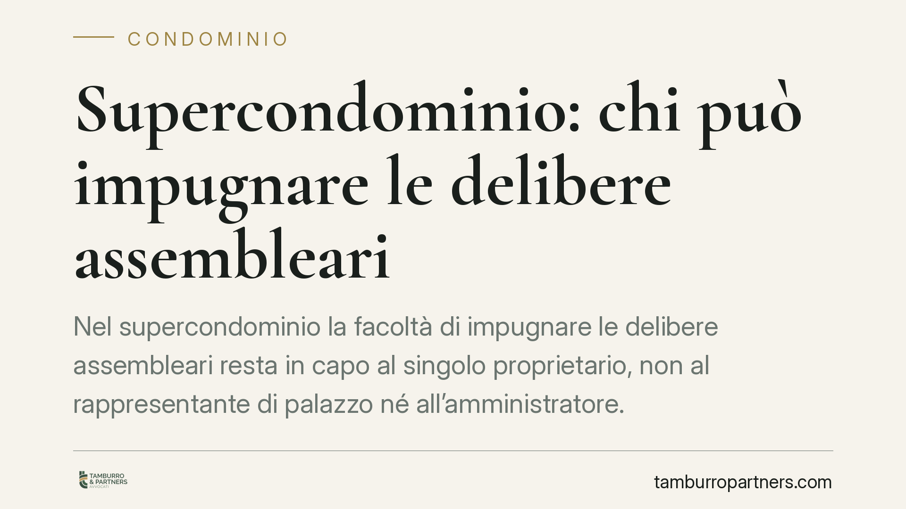
Supercondominio: chi può impugnare le delibere assembleari
Nel supercondominio la facoltà di impugnare le delibere assembleari resta in capo al singolo proprietario, non al rappresentante di palazzo né all'amministratore. Un principio che …
Decreto sicurezza 2026: cosa rischiano i genitori per le violenze dei figli minori ai cortei
Il decreto legge sicurezza n. 190 del 22 ottobre 2026 introduce sanzioni amministrative e obblighi risarcitori a carico dei genitori di minori coinvolti in violenze durante le mani…
Fondo speciale per i lavori straordinari in condominio: natura del vizio e impugnazione
L'art. 1135 c.c. impone all'assemblea di costituire un fondo speciale prima di deliberare lavori straordinari o innovazioni. La sua omissione incide sulla validità della delibera. …
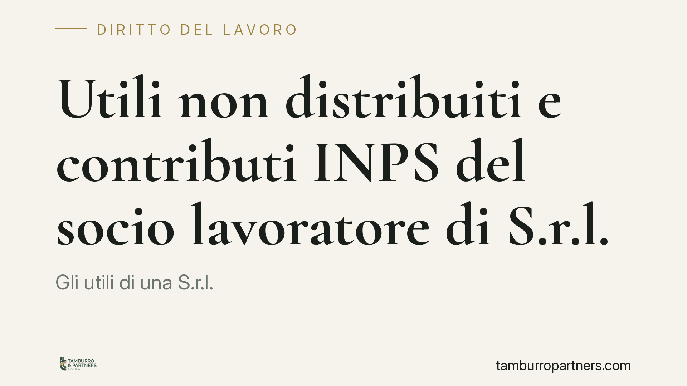
Utili non distribuiti e contributi INPS del socio lavoratore di S.r.l.
Gli utili di una S.r.l. accantonati a riserva e non distribuiti incidono sui contributi previdenziali del socio lavoratore iscritto alla gestione commercianti o artigiani? La quest…
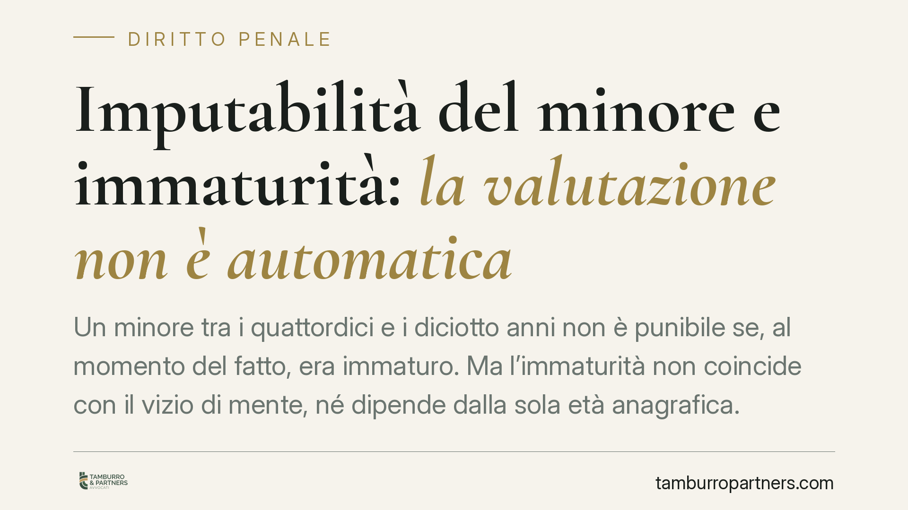
Imputabilità del minore e immaturità: la valutazione non è automatica
Un minore tra i quattordici e i diciotto anni non è punibile se, al momento del fatto, era immaturo. Ma l'immaturità non coincide con il vizio di mente, né dipende dalla sola età a…